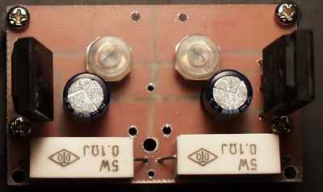

ヒータ部の設計
 どこから設計に入るかは，人によって異なるでしょうが，今回はヒーター回路から入りました．これは他の設計からは分離して考える事が出来るからです．まず，ドライバー管は傍熱管を使いますので，交流点火で片側アースで良いでしょう．ただし無帰還で使う場合は，スピーカのそばまで行くとハムが聞こえるので，気にする方はドライバー管も直流点火した方が良さそうです。問題は 211 のヒーターです．考慮点は 2 つあります．
どこから設計に入るかは，人によって異なるでしょうが，今回はヒーター回路から入りました．これは他の設計からは分離して考える事が出来るからです．まず，ドライバー管は傍熱管を使いますので，交流点火で片側アースで良いでしょう．ただし無帰還で使う場合は，スピーカのそばまで行くとハムが聞こえるので，気にする方はドライバー管も直流点火した方が良さそうです。問題は 211 のヒーターです．考慮点は 2 つあります．
まず，第一に直流点火です．一般に 2A3 ならハムバランサでハムを取りきれるが，300B になると完全に取りきるのは難しいと良く言われます．2A3 は，ヒーター電圧 2.5 V，300B は 5 V です．これに対して 211 は 10V あります．2A3 で良く使われるのは一次側 3.5 kΩの OPT です．211 の場合規格上 10 kΩ位になります．巻き線比は，√3.5：√10 になるので，ヒーター電圧 5V 位ならなんとかなりそうですが，さすがに 10V となると厳しいでしょう．ハム音にノスタルジーを感じるような性癖は持ち合わせていませんから，ここは文句無しに直流点火となります．
 第二に，ヒーターの保護です．金属は温度が低いほど抵抗値が小さいため，電源を入れた瞬間には突入電流がヒーターを襲います．これは確実にヒーター寿命を縮めます．家の電球がスイッチを入れた瞬間に良く切れるのも同じ理由です．211 や 845 に使用されるトリウムタングステンは，まさに電球のように眩しく光り，これはこれで魅力なのですが断線しないかとヒヤヒヤする事になります．実際規格では 32.5W となっており，明かり用の電球とさして変わらない電力を消費します．211 は送信管として設計されているので，しょっちゅう電源を入れたり切ったりというような使い方はあまり想定されていない可能性もあります。ヒーター断線は真空管にとって致命傷ですから，少しでも寿命を延ばすためには対策が必要でしょう．今回の回路では，ヒーターコントロールに，最近安くなったパワー MOS FET を使用しています．このゲートに 470 μF のコンデンサーを抱かせます．電源を入れると，このコンデンサーへの充電に伴ってヒーター電流はじわじわと増加します．実験では 6-7 秒かかって，ヒーター電位は 10V 付近までゆっくりと上がって行くようです．また過大な電流が流れると，ソースにつないだ抵抗によって，ゲート電位が相対的に下がりますので，過電流の防止効果が見込めます．また，リプル成分はゲート部分では，インピーダンスが高いためコンデンサーによってほぼ完全に除かれていますので，リプル電流は，ソースの抵抗による電圧降下でゲート電位を相対的に押し下げる方向に働き，リプルが抑制される効果が見込めます．
第二に，ヒーターの保護です．金属は温度が低いほど抵抗値が小さいため，電源を入れた瞬間には突入電流がヒーターを襲います．これは確実にヒーター寿命を縮めます．家の電球がスイッチを入れた瞬間に良く切れるのも同じ理由です．211 や 845 に使用されるトリウムタングステンは，まさに電球のように眩しく光り，これはこれで魅力なのですが断線しないかとヒヤヒヤする事になります．実際規格では 32.5W となっており，明かり用の電球とさして変わらない電力を消費します．211 は送信管として設計されているので，しょっちゅう電源を入れたり切ったりというような使い方はあまり想定されていない可能性もあります。ヒーター断線は真空管にとって致命傷ですから，少しでも寿命を延ばすためには対策が必要でしょう．今回の回路では，ヒーターコントロールに，最近安くなったパワー MOS FET を使用しています．このゲートに 470 μF のコンデンサーを抱かせます．電源を入れると，このコンデンサーへの充電に伴ってヒーター電流はじわじわと増加します．実験では 6-7 秒かかって，ヒーター電位は 10V 付近までゆっくりと上がって行くようです．また過大な電流が流れると，ソースにつないだ抵抗によって，ゲート電位が相対的に下がりますので，過電流の防止効果が見込めます．また，リプル成分はゲート部分では，インピーダンスが高いためコンデンサーによってほぼ完全に除かれていますので，リプル電流は，ソースの抵抗による電圧降下でゲート電位を相対的に押し下げる方向に働き，リプルが抑制される効果が見込めます．
今回は定電圧回路にはしていません．使いたくても入力電圧が 11 V 程度しか取れないためです。直流点火しようと思っても，良いトランスが無いという点が上げられます．211, 845 用として販売されているトランスは，どれもヒーター用巻線が 10V-10.5V で，普通に整流して得られる電位は 11V 程度です．市販の 10A クラスのブリッジを使うと，恐らく 10V も取り出せないでしょう．かといってヒーター用にまたトランスを増やすというのも，ただでさえ重くなりそうな総重量を更に増やしそうで気が進みません．このため，今回は大電流タイプ(50A クラス)のブリッジと，低 on 抵抗のパワー MOS FET を使用しています．この FET は飽和状態では，なんと 0.01 Ωという on 抵抗の低さを誇っています．最初，バラックで実験した時は 10V を切っていましたが，実際に太い線を使用して最短距離で配線したところ，10V の出力が得られています．
ヒーター部の製作
 この程度の回路なら，ラグ版で組む事も可能ですが，今回はプリント基板を使いました．今は安くて良い DTP ソフトが出ていますから，そんなに精度が要求されない基板なら，こういうソフトを使って設計すると楽です．私は，Met's の G Grew というソフトを使っています．少々精度が低いものの(グリッドは 1mm 単位) 5,000 円以下で買えます．
この程度の回路なら，ラグ版で組む事も可能ですが，今回はプリント基板を使いました．今は安くて良い DTP ソフトが出ていますから，そんなに精度が要求されない基板なら，こういうソフトを使って設計すると楽です．私は，Met's の G Grew というソフトを使っています．少々精度が低いものの(グリッドは 1mm 単位) 5,000 円以下で買えます．
こんな簡単な回路でもちゃんと設計しておかないと，いざ部品をはんだ付けし始めたらお互いにぶつかってしまったり，熱の出る部品と熱に弱い部品が接触してしまったりということになりかねません．特に忘れやすいのが，取り付け用のスペーサーで，穴はあけるのですが，実際にスペーサーを付けてみると，他の部品の半田付け部分に重なってしまって，まっすぐ付けられなくなったりします．パターン設計時は部品面から見た図で設計を行いますが，最後に忘れずにひっくり返して半田面側にします．なお，バラックで組んだ際に，ソース抵抗は 0.1Ωで丁度良かったため，このパターンでもそのサイズになっていますが，実際は，0.2Ω位が適切のようです．この場合は 10W 以上のものを使用して下さい．それにともなって抵抗のサイズが大きくなるので，修正が必要です．私は基板を作り直すのが面倒だったので，0.12Ω＋0.12Ωという形で 5W のものを 2 つ直列につなぎました．
 FET ゲート部分のパターン以外は大電流が流れますから，十分に広くして抵抗を少なくします．広いパターンは部品の放熱板の替わりともなります．プリント基板は塩化鉄(III)を使用してエッチングするのが一般的ですが，今回のように溶かす部分が殆ど無い簡単な基板の場合は，線に沿ってカッターで切れ目を入れて，いらないとこだけはがしてしまえば，簡単に作る事が出来ます．エッチングする場合は，レトラテープで溶かす部分だけを保護した上でスプレー等で他をマスキングし，最後にレトラテープをはがしてエッチングすると良いでしょう．エッチング後の基板はクレンザー等を使って入念に洗います．酸性分が残っていると急激に腐食が進みます．
穴あけは，プリンターでパターン図を出力して基板にセロテープで張りつけ，穴あけ部分にポンチで印を付けてからドリルで開けます．銅箔はそのままだと錆びますから，フラックスを塗るか，半田付け後にコーティング剤を塗布します．私はフラックスのベタベタがいやなのと，コーティング剤を塗るとあとで追加で半田付けするのが面倒になるので，銅箔全体を半田メッキしてしまいます．部品の取り付けは当然背の低いものから付けていかないと，半田面に裏返した時に，半田を付ける前にポトリと落ちてしまいます．
ご感想をお聞かせください(ruimo@ruimo.com)。なお、誠に勝手ながら、HTMLメールはサーバーで全て削除されますので、テキストメールでお願いいたします。
真空管の部屋へ
ホームページへ